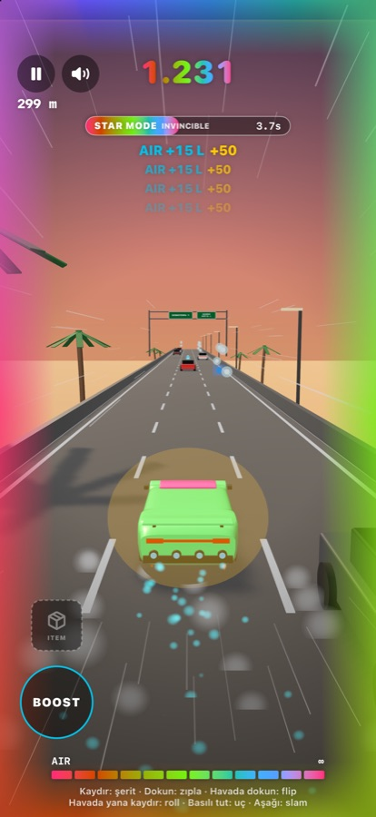
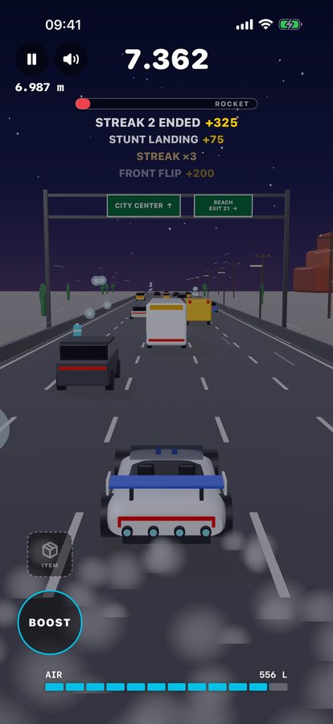
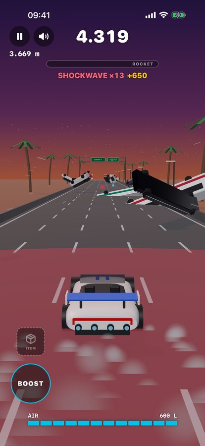
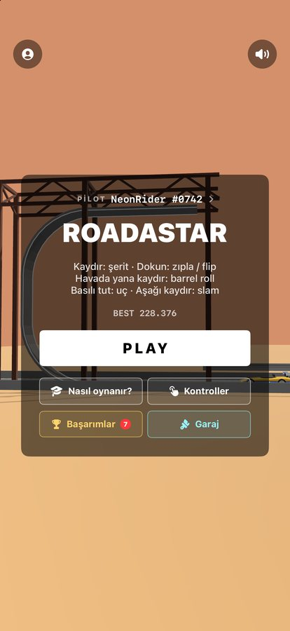

Roadastar tek parmakla oynanan bir otoyol arcade oyunu. Bir loop rampasından baş aşağı fırla, şeritler arasında kaydır, araçların üstünden zıpla ve uç, flip ve barrel roll'ları streak'e bağla. ROCKET barını doldurup sekiz saniye ölümsüz ol, altın yıldızı kap ya da bir eşya kutusu aç ve trafiği havaya uçur. İlerledikçe hız artar: trafiğe otobüsler, tırlar, yol çalışmaları ve köprüler katılır, otoyol da şerit şerit üçten beşe genişler. Her 3 km'de dünya değişir: roket test sahasından gün batımı palmiyelerine, yıldızlı tuz düzlüklerine ve neon şehre. Tamamen iPhone'unda çalışır; hesap gerekmez, kendi sunucumuz yok ve isteğe bağlı Game Center sıralamasını açmadıkça hiçbir şey bir yere gönderilmez.






Yardım mı lazım?
selahattincincin@gmail.com adresine yaz; genellikle birkaç gün içinde kişisel olarak yanıt verilir.
iPhone modelini, iOS sürümünü ve sorun olduğunda ne yaptığını yazman çok yardımcı olur.
Nasıl oynanır
- ⇆Sağa / sola kaydırŞerit değiştir
- ●Dokun ya da yukarı kaydırZıpla
- ↻Havada tekrar dokunFront flip
- ↺Havada yana kaydırBarrel roll
- ▲Basılı tutUç (AIR harcar)
- ▼Aşağı kaydırYola sert in (süren trick yine sayılır)
- ⚡BOOST'a basılı tutHızlan (AIR harcar)
- ▣ITEM'e dokunSaklanan eşyayı kullan
- ✦ROCKET barı dolunca8 saniye ROCKET MODE
- ★Altın yıldız8 saniye STAR MODE
Sık sorulanlar
Eğitimi tekrar nasıl görürüm?
Ana menüde Nasıl oynanır?'a dokun ya da profilini açıp Eğitimi tekrar oyna'yı seç. Açılıştaki rampa sahnesinde ekrana dokunursan doğrudan yola geçersin.
ROCKET MODE ve eşya kutuları ne işe yarıyor?
Trick'ler, kıl payı kaçışlar ve üstünden atladığın araçlar üstteki ROCKET barını doldurur. Bar dolunca 8 saniyelik ROCKET MODE başlar: daha hızlısın, ölümsüzsün ve puanlar üç kat. Yoldaki eşya kutuları AIR'ini doldurur ya da hemen HEAT SHIELD verir; SHOCKWAVE ve LUDICROUS ise BOOST'un üstündeki ITEM yuvasına girer, gerektiğinde dokun.
AIR ne işe yarıyor?
Neredeyse her şeye: zıplama, front flip, şerit değiştirme, slam, uçma ve BOOST biraz AIR harcar. Yolda giderken yavaşça, AIR hücreleri ve AIR CAN'lerle hızla dolar. %20'nin altında bar kırmızıya döner; AIR yokken front flip başlamaz ve şerit değiştirmek yavaşlar.
Dili, sesi veya titreşimi nasıl değiştiririm?
Ana menünün sol üstündeki profil düğmesine dokun. Sistem, Türkçe ve English arasında geç, sesi aç/kapat, motor ve efekt seslerini ayrı ayarla ya da titreşimi kapat. Sağ üstteki hoparlör düğmesi her şeyi tek dokunuşla susturur.
Hiç ses gelmiyor
Profilde Ses açık'ın açık, iki ses kaydırıcısının da sıfırın üstünde olduğuna bak. Roadastar iPhone'un sessiz moduna uyar; sessiz modu kapatıp sesi aç.
Pilot adımı değiştirebilir miyim?
Evet. Profilini aç, adı düzenle ve Kaydet'e dokun. Harf, rakam ve alt çizgi; 3–14 karakter. Adın yanındaki numara değişmez.
En iyi skorum nerede saklanıyor?
Yalnızca iPhone'unda. Hesap olmadığı için skorlar başka cihaza taşınmaz; uygulamayı silersen skorlar da silinir. Ayrıntısı gizlilik politikasında.
R jeton, garaj ve Revive nedir?
Başarımlar ve görevler R jeton kazandırır. Garaj'da bunları boyalara (her biri 1.000 R; İnci Beyazı bedava) ve Revive'a (100 R) harcarsın: kazadan sonra 5 saniye içinde kullanırsan yol temizlenir, skorun ve mesafen kalır; tur başına bir kez. Gerçek parayla satın alınacak bir şey yok.
Game Center sıralaması nasıl çalışır?
İsteğe bağlıdır ve kapalı başlar. Profil'den açınca iOS seni Game Center'a bağlar ve her turdan sonra en iyi skorun sıralama tablosuna gönderilir. Ana menüdeki Sıralama tabloyu açar. Kapatırsan hiçbir şey gönderilmez.
İnternet bağlantısı gerekiyor mu?
Hayır. Oyunun tamamı cihazda çalışır, uçak modunda da oynanır. Tek çevrimiçi özellik isteğe bağlı Game Center sıralamasıdır; sen açana kadar kapalıdır.
Reklam ya da uygulama içi satın alma var mı?
Hayır. Reklam, uygulama içi satın alma ya da abonelik yok.
Hangi iPhone'larda çalışır?
iOS 18 veya üstü olan her iPhone'da. Oyun dikey kullanım için tasarlandı.
Sürüm geçmişi
-
2.0
Daha büyük otoyol
Yakında GeliştiriliyorBölgeler
- 3'er km'lik dört dünya: roket test sahası, gün batımı otoyolu, tuz düzlükleri ve neon şehir
- Gökyüzü altın ikindiden gün batımına, yıldızlı geceye ve neon alacakaranlığa döner
- Yol kenarında roketler kalkar; şehir yerden yüksek bir viyadüğün üstündedir
Araç
- Açık kokpitli, arka kanatlı yeni beyaz-mavi roadster
- On itici: zıplama ve uçuşta alttakiler, BOOST'ta arkadakiler, şerit değiştirirken yandakiler
- STAR MODE'da araç gökkuşağı renklerinde döner
Yol
- Yol ilerledikçe genişler: 2,5 km'de dördüncü, 5 km'de beşinci şerit
- Üst geçitler: altından kıl payı uçup UNDERPASS kap, ama tabliyeye dikkat
- Yolun üstünde yeşil yön levhaları
Trafik
- Hız mesafeyle artar, 100 m/sn'ye kadar
- Trafik ilerledikçe sıklaşır ama her zaman bir geçiş yolu vardır
- Skor arttıkça SUV, limuzin, şehir ve okul otobüsü, tır ve uzun tır
- Tırın üstünden uçup SEMI CLEARED kap
- Sinyal veren şerit değiştirenler, dörtlüleri yanan park sıraları, şerit kapatan yol çalışmaları
Sürüş
- Zıplama 2,5 m; hızlandıkça daha çabuk iner
- Basılı tutunca 6,2 m tavana kadar uç; front flip aracı yukarı kaldırır
- Trick sürerken aşağı kaydır: hızla in, trick yine sayılsın
- Yukarı kaydırmak dokunmak gibi: yolda zıplama, havada front flip
- Mod sırasında BOOST'a basılı tut: hiper boost
AIR
- Her hareketin bedeli var: zıplama 20 L, front flip 40 L, şerit 3 L, slam 20 L, uçma ve BOOST saniye başına
- AIR yolda yavaşça dolar; AIR hücreleri beyaz parlar ve atladığın arabaların üstüne yay çizer
- %20'nin altında bar kırmızı; AIR yokken front flip başlamaz, şerit değiştirmek yavaşlar
- 12 dilimli AIR barı: azalınca kırmızı, ROCKET, STAR MODE ve LUDICROUS'ta mod renginde
- ROCKET, STAR MODE ve LUDICROUS'ta AIR sınırsız; yakındaki AIR hücreleri araca çekilir
Ses
- Daha yumuşak, daha sessiz motor sesi
Arayüz
- Tüm jestleri ve on iticiyi listeleyen Kontroller sayfası
- Mesafe, süre, maks. combo ve rekora göre farkı gösteren sonuç ekranı
- Skorunu 1080 px kart olarak paylaş
- Kare hızı düşünce ya da Düşük Güç Modu'nda gölgeler ve efektler kendiliğinden kısılır
- Yüksek hızda vinyet ve hız çizgileri; MULTI JUMP ve SEMI CLEARED'da kısa kamera sarsıntısı
- İniş, parçalama, kıl payı, eşya, modlar ve kazada kenar flaşı ve kamera sarsıntısı; BOOST'a dokunmak kısa bir boost verir
- Erişilebilirlik: menü ve sayfalarda Dynamic Type, 44 pt dokunma alanları, VoiceOver etiketleri, Hareketi Azalt açıkken kamera sarsıntısı kapalı
Başarımlar
- Bronz, gümüş, altın, platin ve efsane kademeli 76 başarım, 7'si gizli
- İki tur görevi ve her gece yarısı yenilenen bir günlük görev
- Ödül olarak R jeton; başarım açılınca turun ortasında kupa kartı çıkar
Garaj
- Altı boya: İnci Beyazı bedava, diğerleri 1.000 R; seçerken araç önünde döner
- 100 R'ye Revive: kazadan sonra 5 saniyen var, yol temizlenir ve skorun kalır, tur başına bir kez
- Menü bağlantıları: Nasıl oynanır, Kontroller, Başarımlar, Garaj ve Sıralama
- Hoş geldin hediyesi: bir ücretsiz Revive
- Başlangıç eşyaları: Start Revive (30 R, ilk kazada otomatik dirilme), Coin Double (20 R) ve Head Start (10 R: 5 km ileriden 100.000 puanla başla); PLAY'den sonra BAŞLANGIÇ EŞYALARI kartında seçilir
- Her turun sonunda her 100 m için 1 R, sonuç kartında gösterilir
- Kaza diyaloğu sitedeki REVIVE? kartı gibi
Müzik
- ROCKET, STAR MODE ve LUDICROUS'ta hızlanan, kodla üretilen arka plan müziği; Profil'de ayrı Müzik anahtarı
Ağır çekim
- MULTI JUMP, SEMI CLEARED, trick'ler ve ROCKET başlangıcında kısa ağır çekim anları; Profil'den kapatılabilir
Game Center
- İsteğe bağlı sıralama, kapalı başlar: Profil'den açınca en iyi skorun Sıralama tablosuna gider
Görevler
- Ayrı Görevler ekranı: yenilenme sayaçlı iki günlük görev, ödül tek dokunuşla alınır
- Günlük giriş serisi: ardışık her gün 10 R ekler, en çok 50; günlük ziyaret jetonu +10 R
- Menüde Güncellemeler kutusu: bekleyen ödüller ve günlük görevler satır içi Al düğmesiyle
-
1.0
İlk sürüm
Güncel Ekim 2026Oynanış
- Her tur dev bir loop rampasında baş aşağı başlar, ardından GO
- Şerit değiştirme, zıplama, AIR deposuyla uçuş ve slam iniş
- Skor, streak ve mod barları, canlı olay akışı; istediğin an duraklat
- Her tura komik bir bahane, toplam 12 tane
Trick'ler ve combo
- Havada front flip ve barrel roll, temiz inişte STUNT LANDING
- CLEAR, MULTI JUMP ve NEAR MISS bonusları
- Becerileri zincirle, streak çarpanını ×50'ye kadar çıkar
- BOOST ile ekstra hız ve bonus puan
ROCKET ve STAR MODE
- Hareketler ROCKET barını doldurur: 8 saniye ROCKET MODE, daha hızlı, ölümsüz ve ×3 puan
- Altın yıldız: araçları havaya uçuran 8 saniyelik STAR MODE
Toplanabilirler ve eşyalar
- Yolun üstünde AIR hücreleri ve AIR CAN
- Eşya kutuları: OVERPRESSURE, HEAT SHIELD, SHOCKWAVE ve LUDICROUS
- Sonraya sakladığın eşya için BOOST'un üstünde ITEM yuvası
Profil ve ayarlar
- İlk oyunda interaktif eğitim, istediğin zaman tekrar oynanır
- Kendi pilot adın ve rekorun, yalnızca cihazında
- Türkçe ve İngilizce, ayrı motor ve efekt sesi, titreşim aç/kapat
Sorun bildir
Çökme, takılma ya da yanlış görünen bir şey mi var? Ne olduğunu ve ne beklediğini e-postayla yaz. Roadastar analiz verisi toplamaz ve çökme raporu göndermez; bir hatanın fark edilmesinin tek yolu senin mesajın.